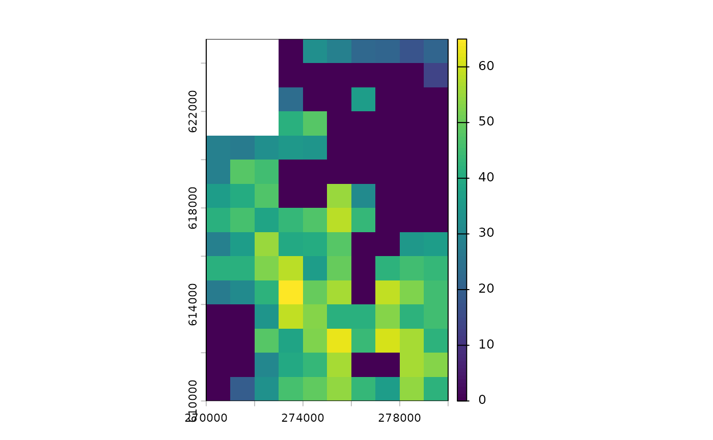
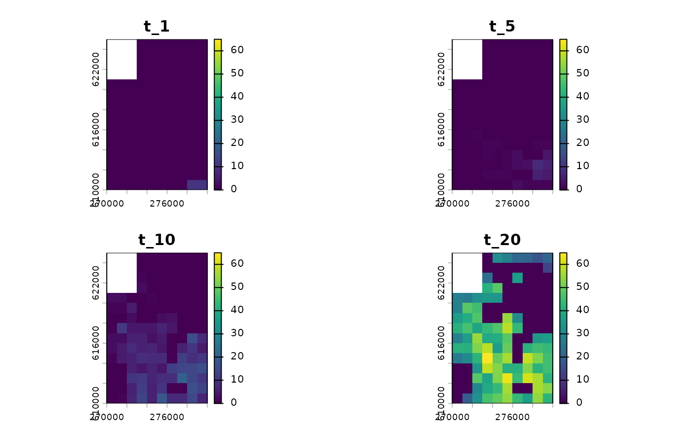
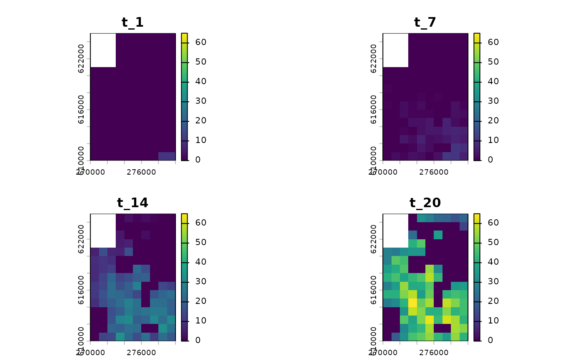

This function simulates population growth and dispersal providing a given
environmental scenario. All parameters for the simulation must be set
in advance using initialise.
Arguments
- obj
sim_dataobject created byinitialisecontaining all simulation parameters and necessary data- time
positive integer vector of length 1; number of time steps simulated
- burn
positive integer vector of length 1; the number of burn-in time steps that are discarded from the output
- return_mu
logical vector of length 1; if
TRUEdemographic process return expected values; ifFALSEtherpoisfunction should be used- cl
an optional cluster object created by
makeClusterneeded for parallel calculations- progress_bar
logical vector of length 1 determines if progress bar for simulation should be displayed
- quiet
logical vector of length 1; determines if warnings should be displayed
Value
This function returns an object of class sim_results which is
a list containing the following components:
extinction-TRUEif population is extinct orFALSEotherwisesimulated_time- number of simulated time steps without the burn-in onesN_map- 3-dimensional array representing spatio-temporal variability in population numbers. The first two dimensions correspond to the spatial aspect of the output and the third dimension represents time.
In case of a total extinction, a simulation is stopped before reaching
the specified number of time steps. If the population died out before reaching
the burn threshold, then nothing can be returned and an error occurs.
Details
This is the main simulation module. It takes the sim_data object prepared
by initialise and runs simulation for a given number of time steps.
The initial (specified by the burn parameter) time steps are skipped
and discarded from the output. Computations can be done in parallel if
the name of a cluster created by makeCluster
is provided.
Generally, at each time step, simulation consists of two phases: local dynamics and dispersal.
Local dynamics (which connects habitat patches in time) is defined by
the function growth. This parameter is specified while creating
the obj using initialise, but can be later modified by using
the update function. Population growth can be either exponential
or density-dependent, and the regulation is implemented by the use of
Gompertz or Ricker models (with a possibility of providing any other,
user defined function). For every cell, the expected population density
during the next time step is calculated from the corresponding number
of individuals currently present in this cell, and the actual number
of individuals is set by drawing a random number from the Poisson
distribution using this expected value. This procedure introduces a realistic
randomness, however additional levels of random variability can be
incorporated by providing parameters of both demographic and environmental
stochasticity while specifying the sim_data object using the initialise
function (parameters r_sd and K_sd, respectively).
To simulate dispersal (which connects habitat patches in space), for each
individual in a given cell, a dispersal distance is randomly drawn from
the dispersal kernel density function. Then, each individual is translocated
to a randomly chosen cell at this distance apart from the current location.
For more details, see the disp function.
References
Solymos P, Zawadzki Z (2023). pbapply: Adding Progress Bar to '*apply' Functions. R package version 1.7-2, https://CRAN.R-project.org/package=pbapply.
Examples
# \donttest{
# data preparation
library(terra)
n1_small <- rast(system.file("input_maps/n1_small.tif", package = "rangr"))
K_small <- rast(system.file("input_maps/K_small.tif", package = "rangr"))
sim_data <- initialise(
n1_map = n1_small,
K_map = K_small,
r = log(2),
rate = 1 / 1e3
)
# simulation
sim_1 <- sim(obj = sim_data, time = 20)
# simulation with burned time steps
sim_2 <- sim(obj = sim_data, time = 20, burn = 10)
# example with parallelization
library(parallel)
cl <- makeCluster(2)
# parallelized simulation
sim_3 <- sim(obj = sim_data, time = 20, cl = cl)
stopCluster(cl)
# visualisation
plot(
sim_1,
time_points = 20,
template = sim_data$K_map
)

#> class : SpatRaster
#> size : 15, 10, 1 (nrow, ncol, nlyr)
#> resolution : 1000, 1000 (x, y)
#> extent : 270000, 280000, 610000, 625000 (xmin, xmax, ymin, ymax)
#> coord. ref. : ETRS89 / Poland CS92
#> source(s) : memory
#> name : t_20
#> min value : 0
#> max value : 65
plot(
sim_1,
time_points = c(1, 5, 10, 20),
template = sim_data$K_map
)

#> class : SpatRaster
#> size : 15, 10, 4 (nrow, ncol, nlyr)
#> resolution : 1000, 1000 (x, y)
#> extent : 270000, 280000, 610000, 625000 (xmin, xmax, ymin, ymax)
#> coord. ref. : ETRS89 / Poland CS92
#> source(s) : memory
#> names : t_1, t_5, t_10, t_20
#> min values : 0, 0, 0, 0
#> max values : 10, 8, 20, 65
plot(
sim_1,
template = sim_data$K_map
)

#> class : SpatRaster
#> size : 15, 10, 4 (nrow, ncol, nlyr)
#> resolution : 1000, 1000 (x, y)
#> extent : 270000, 280000, 610000, 625000 (xmin, xmax, ymin, ymax)
#> coord. ref. : ETRS89 / Poland CS92
#> source(s) : memory
#> names : t_1, t_7, t_14, t_20
#> min values : 0, 0, 0, 0
#> max values : 10, 11, 33, 65
# }